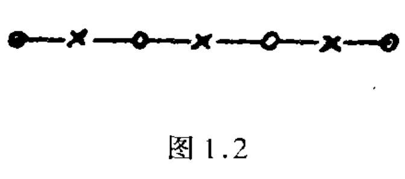

1.2 古典概率计算⚓︎
1.2.1 排列组合的几个简单公式⚓︎
按公式(1.1)，古典概率计算归结为计算两个数M和N。这种计算大多涉及排列组合。二者的区别在于，排列要计较次序而组合不计较：ab和ba是不同的排列，但是是相同的组合。
1.n个相异物件取r个(1≤r≤n)的不同排列总数，为
注意
1.最后一项\((n-r+1)\)表示为\([n-(r-1)]\)。
2.拓展：化简
\(\begin{aligned} \mathrm{A}_n^m & =n(n-1)(n-2) \ldots[n-(m-1)] \\ & =n(n-1)(n-2) \ldots(n-m+1) \\ & =\frac{n(n-1)(n-2) \ldots(n-m+1)(n-m)(n-m-1) \ldots 2 \times 1}{(n-m)(n-m-1) \ldots 2 \times 1} \\ & =\frac{n !}{(n-m) !} \end{aligned}\)
因为，从n个中取出排列中的第1个，有n种取法。在剩下的n-1个中取出一个，作为排列中的第2个，有n-1种取法….最后，在剩下的n-r+1个中取出一个作为排列中的第r个，有n-r+1种取法。因此不同的取法数目为n,n-1，…，n-r+1这r个数之积，从而得出公式(2.1)。
例如，从a,b,c,d这4个文字中取两个作排列，有4×3=12种：
\(ab,ba,ac,ca,ad,da,bc,cb,bd,db,cd,dc\)
特别，若n=r,由(2.1)得
r!读为“r阶乘”，是前r个自然数之积。人们常约定把0！作为1。当r是负整数时，记号r！没有意义。
2.n个相异物件取r个(1≤r≤n)的不同组合总数，为
因为，每一个包含r物件的组合，可以产生r!个不同的排列。故排列数应为组合数的r!倍，由此得出公式(2.3)。\(C_{n}^{r}\)常称为组合系数。
详解
组合数不考虑物件的顺序，因此需要消除排列数中重复计数的部分。 由于每一个包含 r 个物件的组合可以产生 r! 个不同的排列，我将总的排列数 P 除以 r!，以消除重复计数。
例如，从a,b,c,d这4个文字中取2个作组合。有4!/(2!2!)=6种，即ab,ac,ad,bc,bd,cd。
在有些书籍中把记号\(C_{n}^{r}\)写为\(C_{r}^{n}\)，\(C_{n}^{r}\)的一个更通用的记号是\(\left(\begin{array}{l} n \\ r \end{array}\right)\)。我们今后将用\(\left(\begin{array}{l} n \\ r \end{array}\right)\)取代\(C_{n}^{r}\)。当r=0时，按0！=1之约定，由(2.3)算出这可看作一个约定，对组合系数另一常用的 (2.3)算出\(\left(\begin{array}{l} n \\ 0 \end{array}\right)=1\)，这可看作一个约定。对组合系数另一常用的约定是：按公式
只要r为非负整数，n不论为任何实数，都有意义。故可不必限制为自然数。例如，按上式，有
3.与二项式展开的关系 组合系数\(\left(\begin{array}{l} n \\ r \end{array}\right)\)又常称为二项式系数，因为它出现在下面熟知的二项式展开的公式中：
这个公式的证明很简单：因为\(( a + b ) ^ { n } = ( a + b ) \cdot ( a + b ) \cdots ( a + b )\)。为了产生\(a^{i} b^{n-i}\)这一项，在这\(n\)个\((a+b)\)中, 要从其中的 \(i\) 个取出 \(a\), 另 \(n-i\) 个取出 \(b\). 从 \(n\) 个中取出 \(i\) 个的不同取法为 \(\left(\begin{array}{l}n \\ i\end{array}\right)\), 这也就是 \(a^{i} b^{n-i}\) 这一项的系数.
利用关系 (2.4) 可得出许多有用的组合公式. 例如,在 (2.4)中令 \(a=b=1\), 得
令 \(a=-1, b=1\), 则得
另一个有用的公式是
它是由恒等式 \((1+x)^{m+n}=(1+x)^{m}(1+x)^{n}\) 即
比较两边的 \(x^{k}\) 项的系数得到的.
4.\(n\) 个相异物件分成 \(k\) 堆,各堆物件数分别为 \(r_{1}, \cdots, r_{k}\) 的分法是
此处 \(r_{1}, \cdots, r_{k}\) 都是非负整数, 其和为 \(n\), 又这里要计较堆的次序. 就是说, 若有 5 个物体 \(a, b, c, d, e\) 分成 3 堆, 则 \((a c),(d),(b e)\) 和 \((b e),(a c),(d)\) 是算作两种不同分法.
证明很简单: 先从 \(n\) 个中取出 \(r_{1}\) 个作为第 1 堆, 取法有 \(\left(\begin{array}{c}n \\ r_{1}\end{array}\right)\) 种. 在余下的 \(n-r_{1}\) 个中取出 \(r_{2}\) 个作为第 2 堆, 取法有 \(\left(\begin{array}{c}n-r_{1} \\ r_{2}\end{array}\right)\) 种, 以此类推,得到全部不同的分法为
利用公式 (2.3) 并注意 \(n-r_{1}-\cdots-r_{k-1}=r_{k}\), 即得 (2.6)
(2.6) 常称为多项式系数, 因为它是 \(\left(x_{1}+\cdots+x_{k}\right)^{n}\) 的展开式 中, \(x_{1}^{r} \cdots x_{k^{k}}^{r}\) 这一项的系数.
1.2. 2 古典概率计算举例⚓︎
例 2.1 一批产品共 \(N\) 个, 其中废品有 \(M\) 个. 现从中随机 (或说随意) 取出 \(n\) 个, 问 “其中恰好 \(m\) 个废品” 这个事件 \(E\) 的概率是多少?
按 1.2.1 所述, 从 \(N\) 个产品中取出 \(n\) 个, 不同的取法有 \(\left(\begin{array}{l}N \\ n\end{array}\right)\) 种. 所谓“随机”或 “随意” 取, 是指这 \(\left(\begin{array}{l}N \\ n\end{array}\right)\) 种取法有等可 性. 这是古典概率定义可以使用的前提. 所以, 从实际的角度言, 问题在于怎样保证抽取的方法能满足等可能性这个要求. 以下各例中“随机”一词也都是作这种理解。
使事件 \(E\) 发生的取法, 或者说“有利”于事件 \(E\) 的取法, 计算如下: 从 \(M\) 个废品中取 \(m\) 个, 取法有 \(\left(\begin{array}{l}M \\ m\end{array}\right)\) 种. 从其余 \(N-M\) 个合 格品中取 \(n-m\) 个, 取法有 \(\left(\begin{array}{c}N-M \\ n-m\end{array}\right)\) 种. 故有利于事件 \(E\) 的取法, 共有 \(\left(\begin{array}{c}M \\ m\end{array}\right)\left(\begin{array}{c}N-M \\ n-m\end{array}\right)\) 种.按公式 (1.1), 得事件 \(E\) 的概率为
这里要求 \(m \leqslant M, n-m \leqslant N-M\), 否则概率为 0 (因 \(E\) 为不可能 事件).
例2.2 \(n\) 双相异的鞋共 \(2 n\) 只, 随机地分成 \(n\) 堆, 每堆 2 只. 问“各堆都自成一双鞋”这个事件 \(E\) 的概率是多少?
把 \(2 n\) 只鞋分成 \(n\) 堆每堆 2 只的分法, 按公式 (2.6), 有 \(N=\) \((2 n) ! / 2^{n}\) 种. 有利于事件 \(E\) 的分法可计算如下: 把每双鞋各自绑在一起看成一个物体, 然后把这相异的 \(n\) 个物体分成 \(n\) 堆, 每 堆 1 件.按公式 \((2.6)\), 分法有 \(M=n\) ! 种.于是
\(a !!\) 这个记号对奇自然数定义: \(a ! !=1 \cdot 3 \cdot 5 \cdots a\), 即所有不超过 \(a\) 的奇数之积.
另一种算法如下: 把这 \(2 n\) 只鞋自左至右排成一列（排法有 ( \(2 n)\) ! 种), 然后, 把处在 1,2 位置的作为一堆, 3,4 位置的作为一 堆, 等等. 为计算使事件 \(E\) 发生的排列法, 注意第 1 位置可以是这 \(2 n\) 只鞋中的任一只, 其取法有 \(2 n\) 种. 第 1 位置取定后, 第 2 位置 只有一种取法, 即必须取与第 1 位置的鞋配成一双的那一只. 依此 类推, 知奇数位置依次有 \(2 n, 2 n-2,2 n-4, \cdots, 2\) 种取法, 而偶数 位置则都只有 1 种取法. 所以, 有利于事件 \(E\) 的排列总数为 \(2 n\) \((2 n-2) \cdots 2=2^{n} n\) !, 而
与前面用另外的方法算出的相同.
例2.3 \(n\) 个男孩, \(m\) 个女孩 \((m \leqslant n+1)\) 随机地排成一列， 问“任意两个女孩都不相邻”这个事件 \(E\) 的概率是什么?

把 \(n+m\) 个孩子随意排列, 总 共有 \(N=(n+m)\) ! 种不同的排法.有利于事件 \(E\) 发生的排法可计 算如下:先把 \(n\) 个男㧡子随意排成 一列, 总共有 \(n\) ! 种方法. 排定以后, 每两个相邻男孩之间有一位置, 共有 \(n-1\) 个; 加上头尾两个位置, 共 \(n+1\) 个位置 (图 1.2 画出了 \(n=3\) 的情况，“×”表示男孩,4个“○”表示刚才所指出的 \(n+\) \(1=4\) 个位置). 为了使两个女孩都不相邻, 必须从这 \(n+1\) 个位置中取出 \(m\) 个放女孩, 取法有 \(\left(\begin{array}{c}n+1 \\ m\end{array}\right)\) 种. 取定位置后, \(m\) 个女孩子尚可在这 \(m\) 个取定位置上随意排列, 方法有 \(m\) ! 种. 由此推出, 有利于事件 \(E\) 发生的排列数为 \(M=n !\left(\begin{array}{c}n+1 \\ m\end{array}\right) m\) !, 因此,
如果这 \(n+m\) 个孩子不是排成一直线而是排在一圆圈上,则同一事件 \(E\) 的概率是多少? 初一看以为无所区别, 其实不然. 看图 1.2,若以“×”和“C”分别表男、女孩,则在一直线上首尾两女孩 并不相邻. 但若把这直线弯成一个圆圈, 则首尾两女孩成为相邻 了, 因此算法略有不同. 我们留给读者去证明: 答案为 \(\left(\begin{array}{l}n \\ m\end{array}\right) /\left(\begin{array}{c}n+m-1 \\ m\end{array}\right)\).
例 2.4 一个人在口袋里放 2 盒火柴,每盒 \(n\) 支. 每次抽烟时从口袋中随机拿出一盒 (即每次每盒有同等机会被拿出) 并用掉一支. 到某次他迟早会发现: 取出的那一盒已空了. 问: “这时另一盒中恰好有 \(m\) 支火柴”的概率是多少?
解法1 我们来考察最初 \(2 n+1-m\) 次抽用的情况, 每次抽用时有 2 种方法 (抽出甲盒或乙盒). 故总的不同抽法, 有 \(2^{2 n+1-m}\) 种.有利于所述事件的抽法可计算如下: 先看 “最后一次 (即第 \(2 n\) \(+1-m\) 次) 是抽出甲盒” 的情况. 为使所述事件发生, 在前 \(2 n-\) \(m\) 次中, 必须有 \(n\) 次抽用甲盒, 实现这一点不同的抽法为 \(\left(\begin{array}{c}2 n-m \\ n\end{array}\right)\). 类似地, “最后一次是抽出乙盒” 的抽法也有这么多, 故有利于所述事件的全部抽法为 \(2\left(\begin{array}{c}2 n-m \\ n\end{array}\right)\), 而事件的概率为
解法2 因每盒中只有 \(n\) 支, 最晩到第 \(2 n+1\) 次抽取时,或在此之前, 必发现抽出的盒子已空. 故我们不管结果如何, 总把试验做到抽完第 \(2 n+1\) 次为止, 不同的抽法有 \(2^{2 n+1}\) 种.
现在计算有利于所述事件的抽法. 仍如前, 先考虑“先发现甲盒为空” 的抽法有多少. 这必然是对某个 \(r, r=0,1, \cdots, n-m\), 以 下情况同时出现:
\(1^{\circ}\) 第 \(n+r\) 次抽取时抽出甲盒, 而这时甲盒已是第 \(n\) 次被 抽出;
\(2^{\circ}\) 前 \(n+r-1\) 次抽取时, 乙盒被抽出 \(r\) 次（这不同的抽法有 \(\left(\begin{array}{c}n+r-1 \\ r\end{array}\right)\) 种);
\(3^{\circ}\) 紧接着的 \(n-m-r\) 次全是抽出乙盒;
\(4^{\circ}\) 第 \(2 n-m+1\) 次抽取时抽出甲盒 (这时发现它已空, 且乙盒恰有 \(m\) 支);
\(5^{\circ}\) 最后 \(m\) 次抽取结果可以任意(这不同的抽法有 \(2^{m}\) 种).
综合上述, 对固定的 \(r\), 抽法有 \(\left(\begin{array}{c}n-1+r \\ r\end{array}\right) 2^{m}\) 种. 因此, “有 利于事件发生, 且先发现甲盒为空”的抽法, 有
种. 类似地, “有利于事件发生, 且先发现乙盒为空” 的抽法,也有 \(a\) 种, 故总数为 \(2 a\), 概率为
两种方法算出的结果, 只能有一个. 故比较 (2.8) 和 (2.9), 我们得到一个组合恒等式
当然, 你也可以怀疑, 这两个解法中有一个不对, 因而上式也可能错了. 但此式可另行证明. 为方便计, 将式中的 \(m\) 改为 \(n-m\), 而 将该式写为
而因式易用数学归纳法证明: 当 \(m=0,1\) 时,直接计算可知其成立,然后用易证之等式
去完成归纳证明.
这个例子给人的启发是: 适当的考虑得出的简洁解法. 第二种解法, 把试验做到必然能见分晓的地步, 较为自然易懂, 但结果则繁复: 要不是有 (2.8) 对照, 我们可能停留在 (2.9), 而得出不理想的形式. 前一解法抓住了这一点: 要使所设事件发生, 抽取必然是 \(2 n+1-m\) 次. 这一简单的观察导致了远为简洁的解 (2.8).
例 2.5 有 21 本不同的书, 随机地分给 17 个人. 问 “有 6 人得 0 本, 5 人得 1 本, 2 人得 2 本, 4 人得 3 本”这个事件 \(E\) 的概率是多少?
因为每本书都有 17 种可能的分法,故总的不同分法, 有 \(17^{21}\) 种. 为计算有利于事件 \(E\) 的分法, 得分两步分析：(1)按得书本数不同把 17 人分成 4 堆,各堆分别含 6(0 本)、5(1 本)、2(2 本)、4(3 本)人.这不同的分法按公式 (2.6), 有 \(17 !\) /(6! 5! 2! 4!)种. (2) 把 21 本书按 17 人得书数情况分为 17 堆,各堆数目依次为
不同分法有
二者相乘, 得出有利于事件 \(E\) 的分法总数, 进而得出 \(E\) 的概率为
以上举的例子都有一定的代表性. 古典概率计算实质上就是排列组合计算. 但在分析问题时, 怎样去选定一个适当的实现随机化的机制 (如例 2.4, 例 2.5), 怎样去正确计算公式 (1.1) 中的 \(M\), \(N\), 以保证既不重算也不漏算, 则需要细心. 尤其是: 你所设想的机 制是否真的实现了等可能性? 有时表面上看想当然对, 其实是似是而非的. 如例 2.3 中, 圆圈的情况和直线有所不同——在直线上正确地体现了等可能的做法, 在圆圈上却没有. 再看下例.
例 2.6 \(n\) 本书随机给分甲、乙二人，问“甲、乙各至少得到 1 本”这事件 \(E\) 的概率是多少?
\(n\) 本书随机地分给 2 人, 甲得的本数无非是 \(0,1, \cdots, n\), 一共有 \(n+1\) 种可能性,其中 0 和 \(n\) 两种是 “全归一人”, 剩下 \(n-1\) 种有利于 \(E\), 故 \(P(E)=(n-1) /(n+1)\).
这个解法是否对? 不对. 问题在于: \(0,1, \cdots, n\) 这 \(n+1\) 种结果不具有等可能性. 凭常识可以推想: 若 \(n\) 较大, 则甲得 \(n / 2\) 本左右的机会, 应比他全得或全不得的机会大一些. 正确的解法如下: \(n\) 本书分给 2 人, 不同的分法有 \(2^{n}\) 种. 其中仅有两种是使事件 \(E\) 不发生的, 故 \(P(E)\) 应为 \(\left(2^{n}-2\right) / 2^{n}=1-1 / 2^{n-1}\).
评论
登录github的账号后，可以直接在下方评论框中输入。
如果想进行更详细的讨论(如排版、上传图片等)，选择一个反应后并点击上方的文字，进入论坛页面。